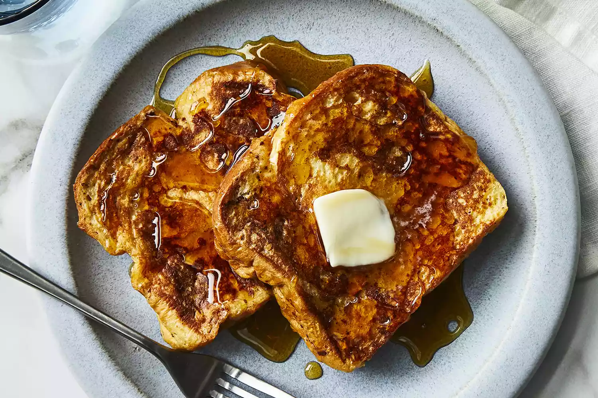

French Toast

Description
French toast is a dish made of sliced bread soaked in beaten eggs and typically milk or cream, then pan fried. Alternative names and variants include "eggy bread", "Bombay toast", "gypsy toast", and "poor knights" (of Windsor).
Ingredients
- ⅔ cup milk
- 2 large eggs
- 1 teaspoon vanilla extract (Optional)
- ¼ teaspoon ground cinnamon (Optional)
- salt to taste
- 6 thick slices bread
- 1 tablespoon unsalted butter, or more as needed
Steps
- Whisk milk, eggs, vanilla, cinnamon, and salt together in a shallow bowl.
- Lightly butter a griddle and heat over medium-high heat.
- Dunk bread in the egg mixture, soaking both sides. Transfer to the hot skillet and cook until golden, 3 to 4 minutes per side. Serve hot.